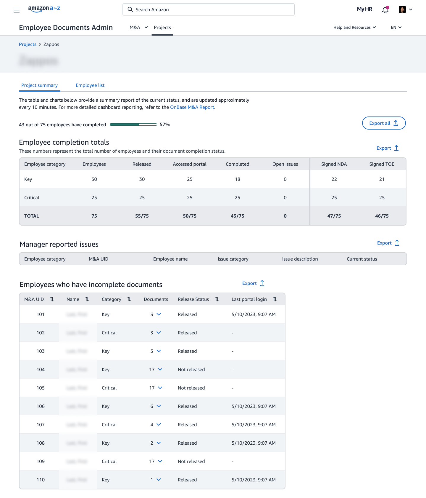
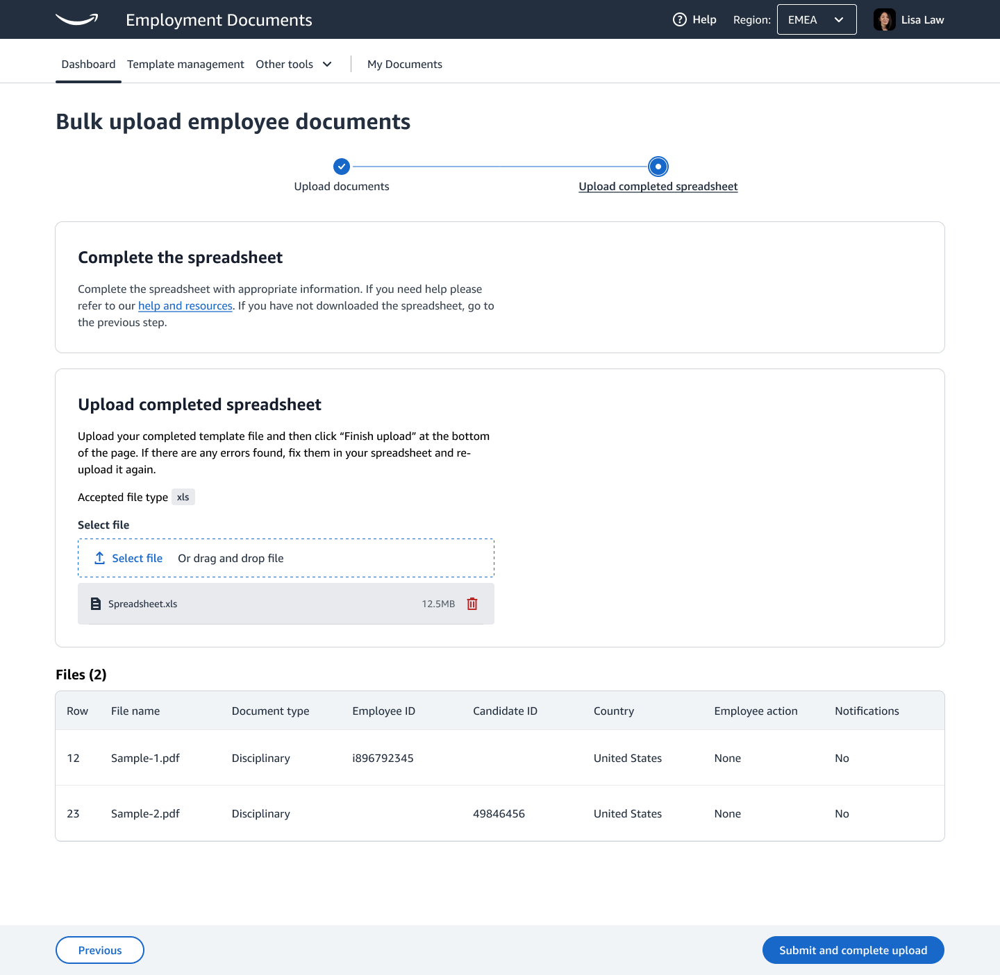

Amazon · Employee Document Management · 2023–May 2026
Setting the bar AI features ship against
On Amazon’s employee document platform, a wrong AI answer can put the wrong document in front of the wrong person, or misstate someone’s pay or start date. I owned the evaluation bar those features had to clear before launch, designed the AI layer across four product surfaces, and built my own AI tools to do the design work faster.
76% → 93%
Accuracy against the golden set
4.1% → 0.6%
Errors on restricted documents
~20%
Less task time for HR business partners
35%
Faster design iteration with my own AI toolkit
The problem
After we shipped the new document platform, it was still reactive. It showed people what had happened and left them to work out what to do about it. AI could close that gap, but HR documents are an unforgiving place to use it. The same input can give a different answer tomorrow. People decide whether to trust a feature after one bad interaction. And some documents are restricted: showing one to the wrong person is a legal problem.
My role
I owned two things. First, the evaluation bar: the rubrics, the test set and the thresholds each AI feature had to meet before it shipped. Second, the design of the AI layer itself across four surfaces, from the cross-functional workshops that picked where AI would help through to the final screens. Every concept came from a research finding or an existing backlog item.
Defining “good enough”
I wrote the scoring rubrics and built a golden set of 1,800 documents across 15 document types and 8 languages, so the model was tested on the variety it would actually meet, including non-English and country-specific documents. Cases the rubric couldn’t settle went to human review panels.
It gave every launch review the same measure to check against. Over the course of the work, accuracy against the golden set went from 76% to 93%, and errors on restricted documents fell from 4.1% to 0.6%.
I tracked restricted-document errors separately from overall accuracy. An overall number can look healthy while the rare, high-risk mistakes stay hidden in the average.
Designing for when the model is wrong
For every AI feature I spent as long on what happens when the model is wrong, and how the screen recovers, as on the main flow. Three rules held across all four surfaces:
Show the evidence
Put the source next to the suggestion and let the person make the call
Design the fallback
When the model isn’t confident, the screen still has to work without it
Keep a person accountable
Someone has to be able to answer who approved what, and when
Four surfaces
M&A dashboard: from a percentage to a next step
Managers tracking acquisition paperwork had one signal: a completion percentage. They had to work out for themselves whether 57% was on track and what was holding it up. I designed risk scoring with a plain-language reason on each project, a forecast close date based on how fast documents were actually coming in, and anomaly detection that names the real blocker instead of leaving it in a table.

Bulk generation: ending the re-upload loop
When a bulk upload had errors, HR downloaded the file, fixed it offline and uploaded everything again. For 72 employees with 8 bad rows, that meant repeating the whole job. I designed inline fixes instead: the system proposes the likely correction, shows its confidence and reasoning, and HR accepts or rejects each one. Rows it can’t fix are flagged plainly and don’t hold up the rest. About 75% of common errors became fixable without leaving the page.

HR admin portal: context before the approver opens the file
Approvers were reading 14-page agreements start to finish to find out whether anything was wrong. A pre-review panel now checks the document against Workday first and flags pay band violations, legal entity mismatches and expired IDs. The approver still makes the decision; they just start with the problems instead of hunting for them.
Employee portal: understanding what you sign
New hires on their first day, warehouse employees on phones, and non-native speakers reading bilingual legal agreements needed the most help. A plain-language panel explains each section and flags clauses with real consequences, such as non-solicitation terms on page 8. A section tracker notices when someone skims past a high-stakes clause, so the product can step in before the signature instead of after.
The full platform story, including the accessibility work these features build on, is in the Employee Document Management case study.
Building my own tools
Alongside the product work I build AI tools for my own design practice. I started because I wanted to know how these systems behave from the inside, and it has cut my design iteration time by about 35%.
MCP servers connect AI assistants to what a designer actually uses: design systems, documentation, research repositories and project tracking. An assistant that can read the current design tokens, last week’s usability findings and the open tickets gives far better help than one guessing from a prompt.
LangGraph agents gather competitive information, find patterns across research sessions and draft structured design briefs. They don’t make design decisions. They shorten the time between “we need to understand X” and “here’s what we know.”
Building them changed how I design AI products. I’ve hit context-window limits, unreliable tool calls, hallucinations and slow responses myself, so when someone asks “can the AI just figure that out?” I can give a straight answer and suggest a design that works within the real limits.
Outcomes
- Accuracy against the golden set rose from 76% to 93%.
- Errors on restricted documents fell from 4.1% to 0.6%.
- HR business partners spend about 20% less time on the tasks the AI layer covers.
- About 75% of common bulk-upload errors are now fixed inline instead of by re-uploading.
What I’d do differently
I’d build the measurement infrastructure first. We got there, but later than I wanted. Server-side task timing and a continuous feedback loop from day one would have given us signal during design, not only after launch.
I’d also bring legal and compliance into the AI workshops from the start. Many of the constraints we designed around were ones I already knew from the platform work, and having those stakeholders in the room earlier would have sped things up and likely surfaced edge cases we missed.
What I think about AI and design
The biggest change AI brings to design is speed. When you can prototype five directions in an afternoon, the slow part becomes deciding which one is right. That makes the old senior skills more valuable: asking the right question, knowing which signal to trust, and making a call when the data is unclear.